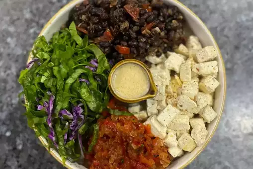

Mexican Breakfast

- 100 gm tofu
- 1 capsicum (green pepper)
- 2 tablespoon virgin olive oil
- salt as required
- 6 cloves garlic
- 100 gm boiled,soaked overnight black beans
- 100 gm spinach
- 1 teaspoon lemon juice
- 1/2 inch ginger
- 2 boiled tomato
- 1 onion
- 1/2 teaspoon carom seeds
- sugar as required
- 1/2 teaspoon chilli flakes
- black pepper as required
- 100 gm purple cabbage
- 1/2 teaspoon maple syrup